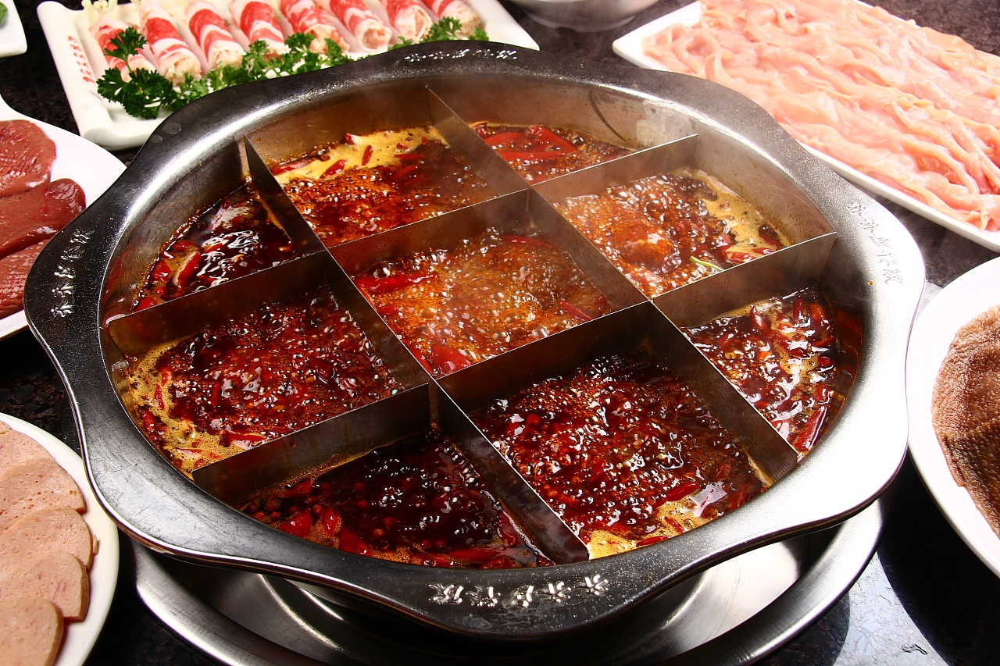
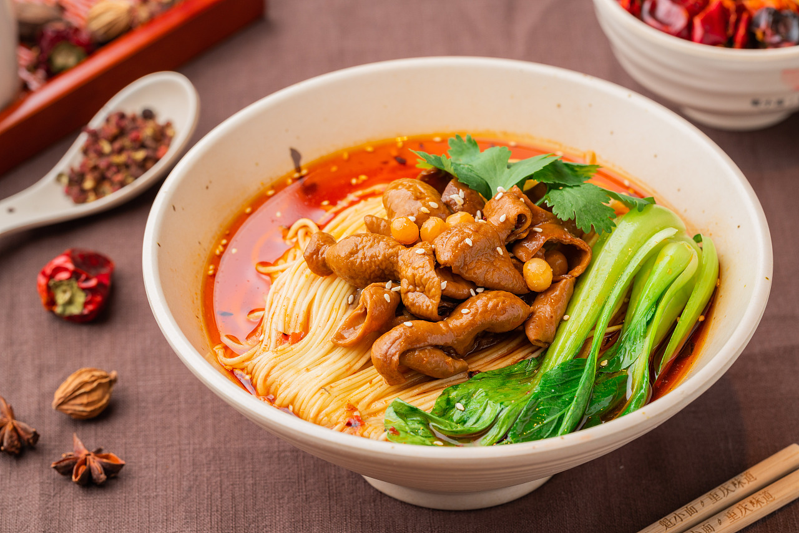
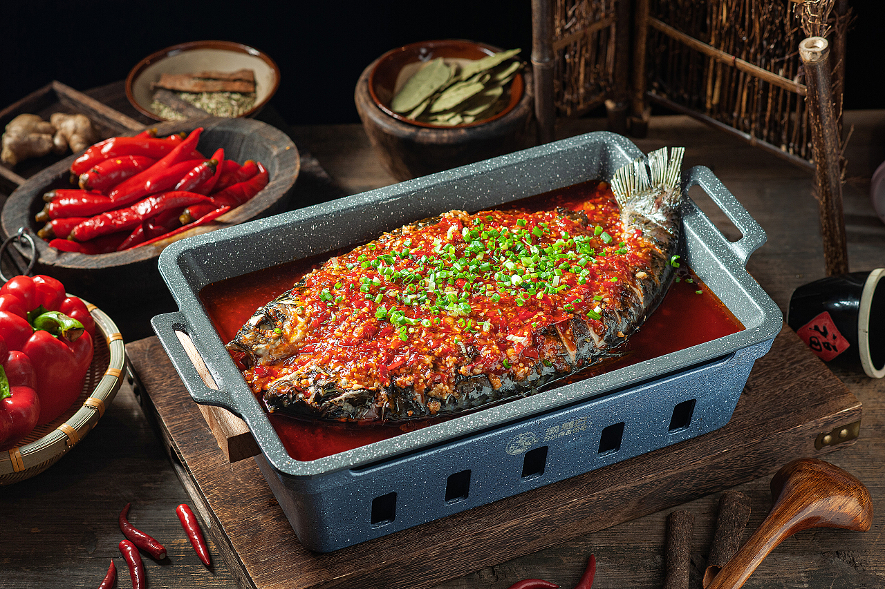
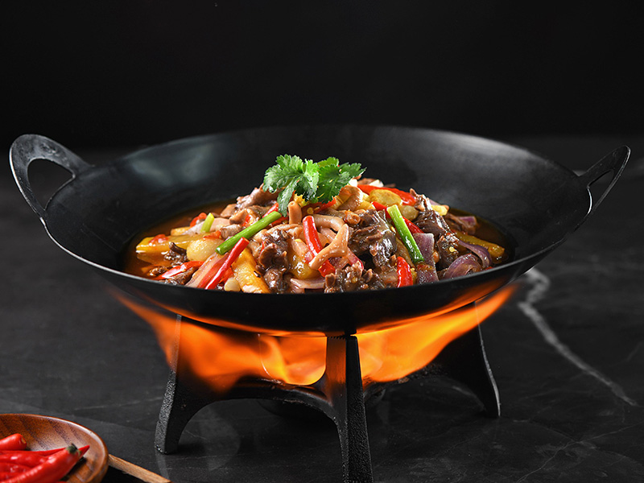
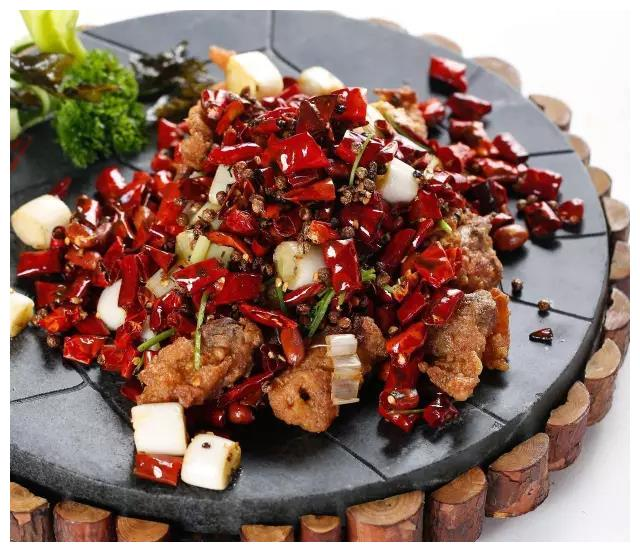
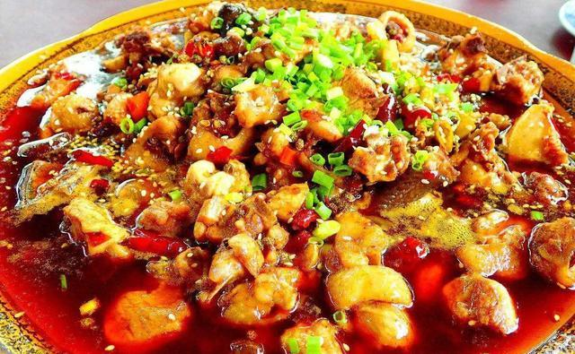

重庆饮食文化
重庆饮食特点与文化-“一菜一格,百菜百味”
重庆火锅
重庆老火锅是川渝地区传统美食之一，以麻辣为主，咸鲜、酸辣味兼有，分清汤火锅、红汤火锅和鸳鸯火锅。它以调汤考究见长，具有原料多样，荤素皆可，适应广泛，风格独特，场面热烈等特色，因而热辣山城。
重庆小面
重庆小面是作为南方人的重庆市民普遍接受的传统面食，因其独特口感，以辣闻名，近年来全国知名。
万州烤鱼
万州烤鱼是重庆市万州区的特色传统名菜，属于渝派川菜系。万州烤鱼把鱼剖洗净后平放在铁夹中，放在炉上用木炭烧烤，盛到专用铁盘中，浇上用牛油、红油、白糖、花椒、辣椒等调味品炒出底料，放上西芹、豆芽等爽口菜。口味咸辣。
重庆黔江鸡杂
黔江鸡杂运用土家烹饪方法，泛指鸡的内脏，即鸡心、鸡胗、鸡肠和鸡肝之类为原料。爆椒鸡杂是地道的重庆江湖菜，鸡杂的腥膻味重，将其与辣椒、泡椒和葱姜蒜同炒，热菜油烹饪红艳艳的泡椒、粉嫩嫩的泡萝卜丝，既可以去除鸡杂的异味，还使成菜脆嫩鲜香、辣得人食欲大增。
歌乐山辣子鸡
歌乐山辣子鸡是重庆歌乐山地区的特色菜，由朱汉清首创，自1910年流传至今已有百多年历史。这道菜最初以干煽方式制作，肉块较大，风味麻辣可口，肉质紧实弹牙干香，具有浓郁的川东地方风味特色。
南山泉水鸡
泉水鸡是重庆市传统的地方名菜，属于渝派川菜，特点是用料独特、麻辣味足、鲜酥爽口
